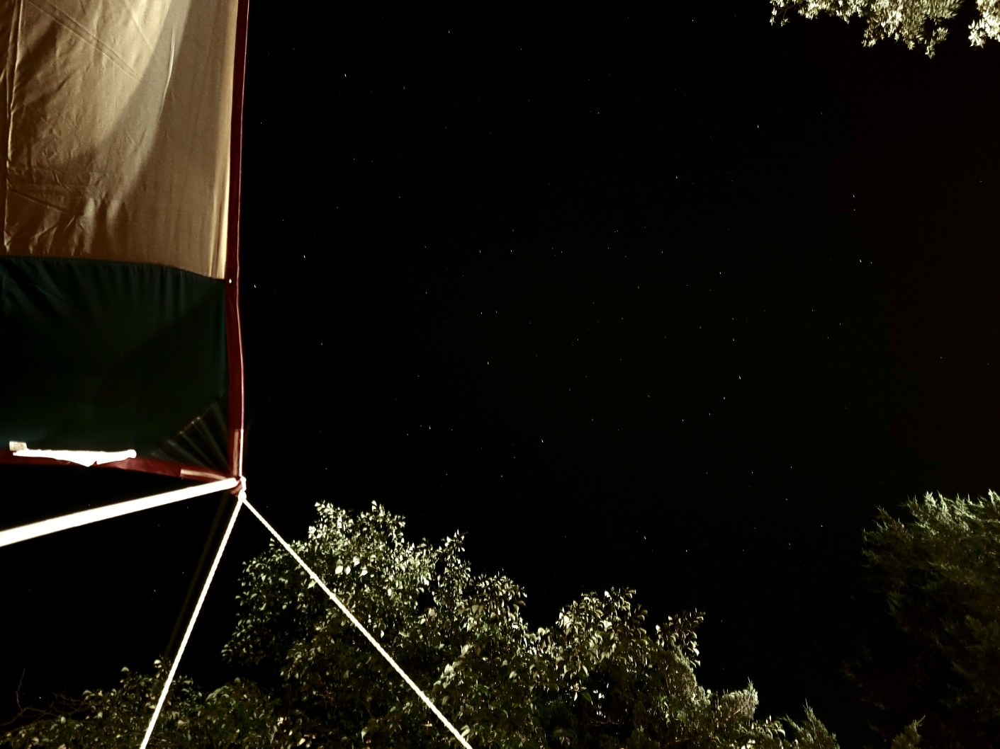

- Cooking & Baking
- I love experimenting with new recipes and baking delicious treats in my free time. I find the process of cooking and baking incredibly relaxing and rewarding!
- Camping
- Camping is one of my favorite outdoor activities. I enjoy spending time in nature, away from the hustle and bustle of everyday life. Here are a couple of photos from some of my camping trips:
- Playing with My Cats
- Nothing beats the joy of playing with my cats! They bring so much joy to my life, and I love spending time with them. Click here to see more photos of my furry friends!
